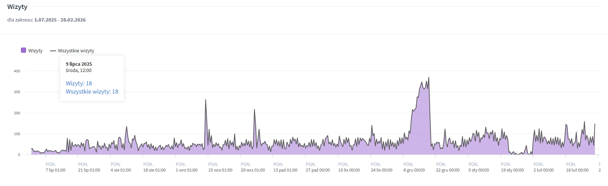

Buduję przewagę rynkową poprzez inteligentną automatyzację. Łączę 15-letnie doświadczenie operacyjne z nowoczesnym wdrażaniem agentów AI i optymalizacją E-commerce.
Moja kariera to droga od zarządzania krytycznymi systemami logistyki kolejowej do architektury nowoczesnych rozwiązań E-commerce wspieranych przez AI. Jako Dyspozytor w ŁKA codziennie podejmuję kluczowe decyzje pod presją czasu, co wykształciło we mnie analityczne podejście i dbałość o najwyższe standardy operacyjne[cite: 9, 11, 12, 13].
Obecnie moją pasją i głównym obszarem działań jest rozwój sklepu emarket-automatyka.pl. Nie ograniczam się do administrowania — tworzę systemy, które ulepszają każdy aspekt sprzedaży. Wdrożyłem autorską strategię SEO i Content Marketingu, tworząc m.in. "Strefę Instalatora", co pozwoliło na 5-krotny wzrost ruchu organicznego.
Moim celem jest eliminacja powtarzalnych zadań poprzez automatyzację w Pythonie. Wykorzystuję AI nie tylko do generowania treści, ale jako agentów wyszukujących ceny konkurencji czy analizujących dane, co przekłada się na realny wzrost przychodów platformy o ponad 1000% w kluczowych okresach.
Autorski skrypt monitorujący rynek w czasie rzeczywistym. System automatycznie analizuje oferty konkurencji, raportuje zmiany i pozwala na błyskawiczną reakcję cenową w niszowej branży automatyki do bram.
Dowód wydajności: Skoki wywołań API pokazują intensywną analitykę danych bez wpływu na stabilność infrastruktury sklepu.

Kompleksowa rozbudowa sklepu od podstaw. Od opracowania struktury technicznej, przez zaawansowaną optymalizację SEO, aż po budowanie autorytetu domeny poprzez specjalistyczne treści[cite: 20, 22].


Skuteczne skalowanie niszowego biznesu: wzrost przychodów z poziomu 2 tys. do ponad 21 tys. PLN miesięcznie.
Python (Playwright, BeautifulSoup), Prompt Engineering, Agenty AI, LLM Orchestration.
Shoper, PrestaShop, Allegro, Zarządzanie platformami sprzedaży od podstaw[cite: 20, 22].
Strategia słów kluczowych, optymalizacja techniczna, tworzenie treści eksperckich, SEO Copywriting[cite: 35].
Zarządzanie serwerem, monitoring wydajności, analiza danych logistycznych.
Zarządzanie ruchem pociągów, koordynacja działań kryzysowych i nadzór nad realizacją planów w czasie rzeczywistym[cite: 9, 10, 11, 12].
Zarządzanie zespołem handlowym i nadzór nad procesami magazynowymi[cite: 15, 16, 18].
Budowa i administracja sklepami internetowymi, obsługa przetargów oraz logistyka sprzedaży[cite: 19, 20, 22].
Szukasz partnera, który rozumie operacje i potrafi wdrożyć nowoczesną technologię?
Wyślij wiadomość Pobierz CV (PDF)